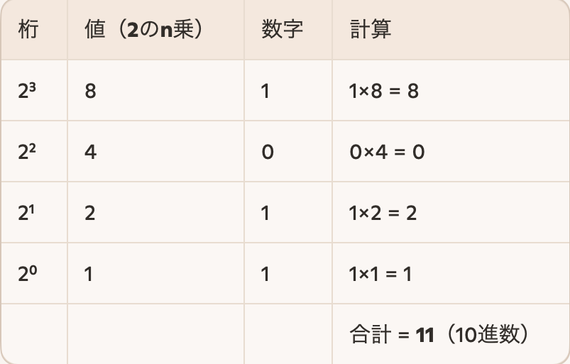
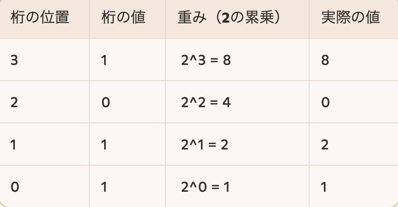

2進数 は、0と1の2つの数字だけを使って数を表す方法です。
各桁には「重み」があり,これはその桁が表す値の大きさを意味します。
2進数 は、0と1の2つの数字だけを使って数を表す方法です。
各桁には「重み」があり、これはその桁が表す値の大きさを意味します。
2進数は「0」と「1」だけで数を表す数の表現方法で、
電気のON(1)とOFF(0)という2つの状態を使って情報を処理するため、
コンピュータでは2進数が使われます。
例:2進数「1011」の意味

2進数(2進法)は、0と1の2つの数字だけを使って数を表す方法です。
各桁には「重み」があり、これはその桁が表す値の大きさを意味します。
例:-2進数「1011」の各桁の重み

📘 練習方法のアイデア：
• ランダムに2進数を選んで、10進数に変換してみる
• 逆に、10進数から2進数に変換してみる
• 並び替えゲーム：バラバラに並べて、昇順に並び替える
変換の基本ルール
1. 2進数の各桁に右から順に 2 の累乗をかける。
2. すべての値を足し合わせる。
3. 合計が10進数の値になる。
変換の基本ルール
1. 10進数を2で割る。
2. 商を再び2で割り、余りを記録する。
3. 商が0になるまで繰り返す。
4. 余りを逆順に並べると、2進数の値になる。